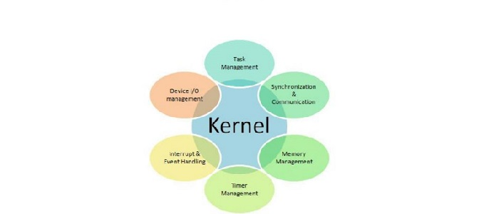
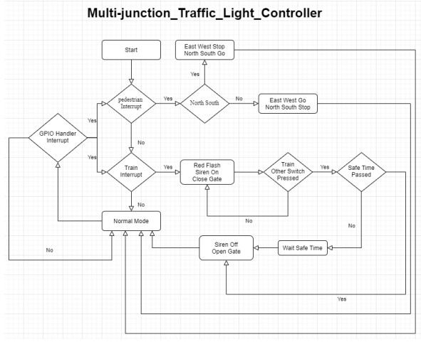
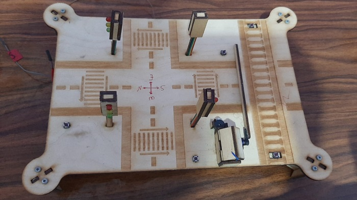

Multi-junction Traffic Light Controller
This project aims at building a realistic prototype for intelligent transportation system (ITS). A prototype for road intersection was built accompanied with a software that controls traffic light based on the behaviour of pedestrians, vehicles and nearby train.
Project Specifications and Description :1. The project consists of the main frame, four traffic lights, 4 push buttons for pedestrian, 2 push buttons for the train, siren, and servo motor. The frame consists of two main roads north-south and east-west plus train road which is parallel to east-west road.
2. Because the two roads are perpendicular, we must stop one road and leave the other running then vice versa. The running time of north-south road is 5 seconds, and the running time of east-west is 2.5 seconds. Also, the gate must be vertical.
3. Adding to the scenario pedestrians, now adding a push button beside each traffic lights to give a signal to the controller so, it stops the road until pedestrians move to the other side. If someone press the push buttons while the road is already is blocked nothing will happen, but if the road is running now the controller must stop the road for pedestrians.
4. The last scenario is the train, when the train press the push button it gives a signal to the controller so, the controller starts to flash the red lights for all traffic lights with frequency of 1 second and the gate must be horizontal, and the siren starts to work. The train road is 2 way so the train can approach from east to west or west to east. Then the first push button indicates the approach of the train and the second one the departure of the train. The gate will back to normal mode if time between pressing two switches must be great than 20 seconds.
Drivers used to cover the requirements:
1. FreeRTOS to manage the four tasks.
2. Binary semaphore for each task plus interrupts from switches to save power.
3. GPTM Timer to generate the PWM for the servo motor.
4. GPTM to create timer to create 20, 5, and 2.5 seconds.
Design details, operation manual:
Case (1): Pressing the reset button in the tiva c itself must run the model in the normal mode.
Case (2): Pressing the pedestrian push button while the traffic light is red, nothing must happen.
Case (3): Pressing the pedestrian push button while the traffic light is green, the green light must turn into red.
Case (4): Trying sequence of push buttons.
Case (5): Pressing more than one push button at the same time.
Case (6): Pressing the west button of the train this must close the gate and flash the red lights.
Case (7): Pressing the east button before cross time, the gate must be still closed.
Case (8): Pressing the east button after cross time, the gate will open.
Case (9): The reverse the last two cases.
System Architecture:

Model Used:

Navigate Through Gate:
https://www.youtube.com/watch?v=V_1oMLNyIGc